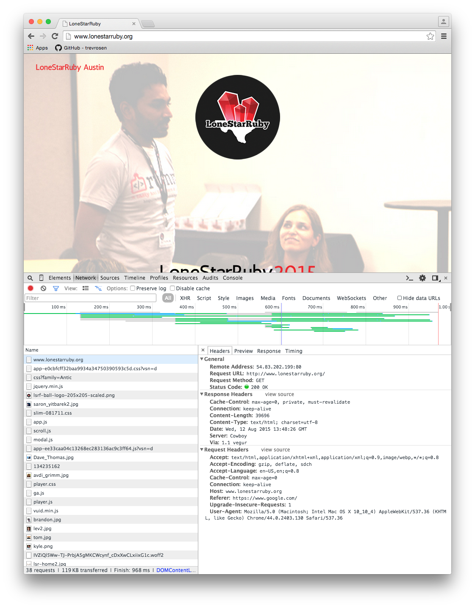
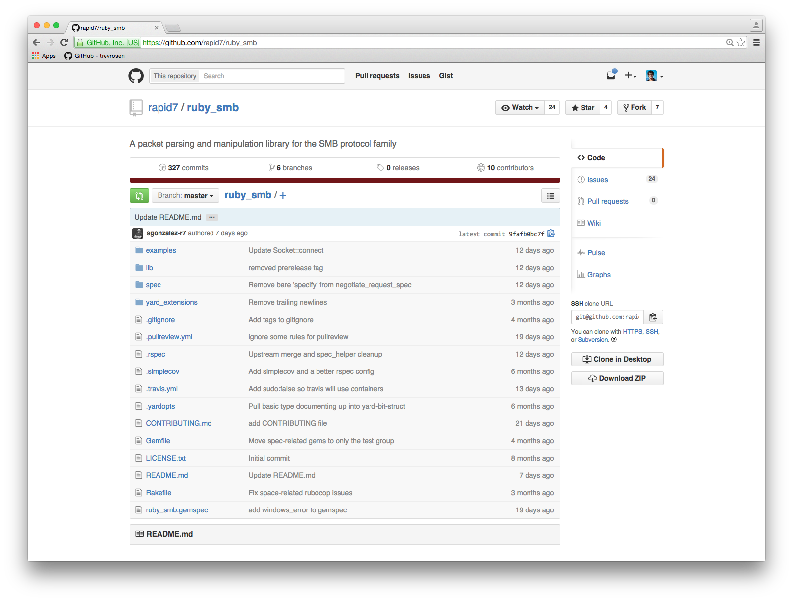

Building a Binary Protocol Client in Ruby
@trevrosen and @egypt
First things First
What's a protocol (really)?
Wikipedia:
In telecommunications, a communication protocol is a system of rules that allow two or more entities of a communication system to communicate between them to transmit information via any kind of variation of a physical quantity.
There are two basic kinds:
- Text-based (e.g. HTTP, SMTP, IRC)
- Binary (e.g. APN, SMB)
They are kind of opposites
- Text-based protocols are intended to be read by humans
- Binary protocols are intended to be read by machines
We've probably all looked at some HTTP traffic:
Here's some captured SMB traffic. The stuff on the right is the binary data:
0x0000: a493 4ce6 0d40 0005 1ba4 07cb 0800 4500 ..L..@........E.
0x0010: 005b e0e9 4000 4006 0000 0a06 0068 0a14 .[..@.@......h..
0x0020: 2436 ec71 01bd e79c 5824 b85e 7c1d 8018 $6.q....X$.^|...
0x0030: 1000 3905 0000 0101 080a 2961 e7f7 001f ..9.......)a....
0x0040: d761 0000 0023 ff53 4d42 7100 0000 0008 .a...#.SMBq.....
0x0050: 0048 0000 0000 0000 0000 0000 0000 0508 .H..............
0x0060: c115 0010 0000 0000 00 .........
Wireshark to the Rescue!
Let's take a quick look at a spec for an easy binary protocol (i.e. NOT SMB)
Example: Apple Push Notification (APN) protocol
- Super-simple protocol
- Asynchronous
- Used to send notifications on iDevices

So simple, we can show format in a picture:
 Source: iOS Developer Library
Source: iOS Developer Library
The spec will tell us!
How do we make one in Ruby?
We need more control over the bits than Ruby classes give us.
C Structs
The OG Structured Data Type
A Real Struct for a Fake Packet
typedef struct FakePacket {
int id;
int sequence_number;
}FakePacket;
Here's some code that uses one:
#include <stdio.h>
typedef struct FakePacket {
int id;
int sequence_number;
}FakePacket;
int main(int argc, const char *argv[])
{
struct FakePacket foo;
foo = (FakePacket) { .id = 1, .sequence_number = 80};
printf("Sequence number: %d", foo.sequence_number);
return 0;
}
Wikipedia:
A struct in the C programming language (and many derivatives) is a complex data type declaration that defines a physically grouped list of variables to be placed under one name in a block of memory, allowing the different variables to be accessed via a single pointer, or the struct declared name which returns the same address.
A packet is just a struct!
BinData
A library for building C structs in Ruby so that you can deal with binary data in a Ruby-ish way
BinData provides a declarative way to read and write structured binary data.
class Rectangle < BinData::Record
endian :little
uint16 :len
string :name, :read_length => :len
uint32 :width
uint32 :height
end
io = File.open(...)
r = Rectangle.read(io)
puts "Rectangle #{r.name} is #{r.width} x #{r.height}"
So let's recap the tools/knowledge we have:
- We know how packets are structured
- We know how a binary protocol spec is organized (from APN)
- We have a way to produce binary structures for the wire
SMB
Well, first a digression
Metasploit
- Penetration testing/exploit development framework
- Open source
- Audacious as hell
- Used by (good|bad) folks worldwide
- Written in Ruby
Pentesting: How far can you get?
- Compromise a machine and see where you can go from there
- Frequently, networked machines will have access to several network segments
- So compromising a machine will make more machines visible
- Then you can compromise machine B because you can see it from machine A
This is called a "pivot"
Ok, but why do we care?
Metasploit network clients must handle socket creation themselves
- This is why we make lots of protocol clients
- We have to instantiate the socket in the context of the routes made available by pivots, at runtime
SMB (Server Message Block)
- THE protocol for Window networking
- File shares, printers, desktops, etc talk to each other this way
- Open source (reverse-engineered) is Samba
- Attacking Windows is very important to Metasploit
Ruby SMB
- A new, pure Ruby implementation of SMB
- Written to be socket-agnostic
- Covering both SMBv1 and SMBv2/3
Dispatchers
The thing that sends packets
Sockets are passed in as a dependency
Client
The thing that holds the current protocol state
- what dialect are we using?
- was authentication successful?
- session key for cryptographically signing packets
dispatcher = RubySMB::Dispatcher::Socket.connect("192.168.100.140")
client = RubySMB::SMB2::Client.new(
dispatcher: dispatcher,
username: "administrator",
password: "P@ssword1",
domain: "CONTOSSO"
)
client.negotiate
client.authenticate
In the Future
You'll be able to:
- speak SMB v1 through v3, including encryption
- route through things like
Net::SSH - (or anything else that can give you an IO-like)
Contact
- @trevosen
- @egyp7, egypt@metasploit.com